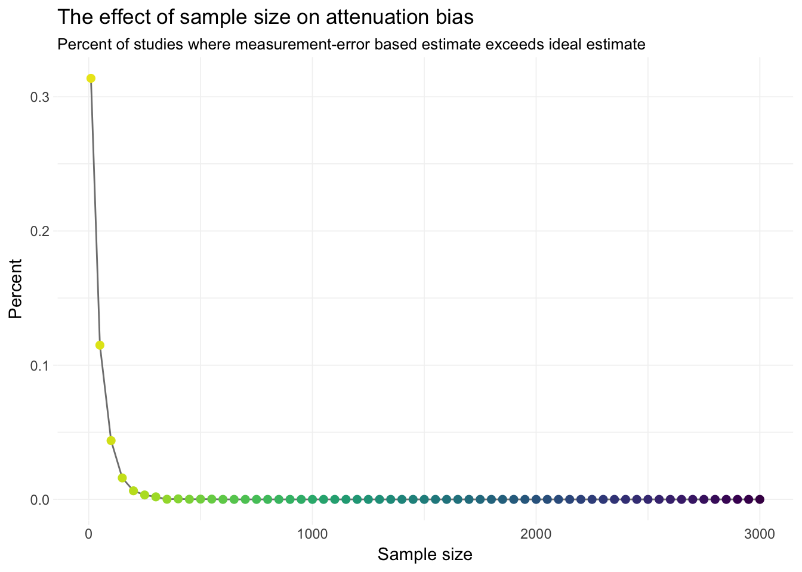

Updating Intuition on Attenuation Bias
Thursday, 30 March 2017
Loken and Gelman
In a recent Science paper, Eric Loken and Andrew Gelman discuss an interesting statistical nuance relevant to measurement error. Loken and Gelman begin by pointing out statisticians/econometricians/people with data and computers have the mindset that measurement error in one of our covariates biases our point estimates toward zero—the infamous attenuation bias. Pushing this attenuation-based mindset further, researchers infer that a statistically significant point estimate would be even larger in the absence of measurement error. Loken and Gelman that this second logical leap is not, in fact, logical. Why? While attenuation bias is a real thing, once we begin conditioning on statistically significant results, we add a second dimension that we must consider: power. In settings with low power—e.g., small \(N\) and subtantial variance—in order to “achieve” a statistically significant result, the point estimate must be quite large. Thus, the attenuation effect may be reversed by a low-power effect. The big idea here is that conditioning on significant results—a very real thing in the presence of p-hacking and publication bias—changes the behavior of something we all thought we understood—measurement error and attentuation bias.
Loken and Gelman’s takeaway?
A key point for practitioners is that surprising results from small studies should not be defended by saying that they would have been even better with improved measurement.
Simulation
I thought it would be fun to replicate the results in a simple simulation.
My R setup
# Packages
library(data.table)
library(magrittr)
library(parallel)
library(ggplot2)
library(viridis)
# My ggplot2 theme
theme_ed <- theme(
legend.position = "bottom",
panel.background = element_rect(fill = NA),
# panel.border = element_rect(fill = NA, color = "grey75"),
axis.ticks = element_line(color = "grey95", size = 0.3),
panel.grid.major = element_line(color = "grey95", size = 0.3),
panel.grid.minor = element_line(color = "grey95", size = 0.3),
legend.key = element_blank())
# Set seed
set.seed(12345)Function: Generating data
One of Loken and Gelman’s big points is that sample size (specifically, power) matters for attenuation bias, once we start conditioning on statistically significant results. So let’s write a function that generates a sample of size n for a simple linear regression. The function will also take as inputs the true intercept alpha and the true slope coefficient beta. For simplicity, we will generate each variable from a standard normal distribution. Finally, the function will accept a third parameter gamma that dictates the degree of measurement error in our covariance.
Formally, the population data-generating process is
\[ y_i = \alpha + \beta x_i + \varepsilon_i \]
but instead of observing \(x_i\), the researcher observes
\[ w_i = x_i + \gamma u_i \]
where \(\gamma u_i\) is the “noise” that we add to \(x_i\) to generate measurement error. Again, we will assume \(u_i\) comes from a standard normal distribution.
sim_data <- function(n, alpha, beta, gamma) {
# Generate x, e (disturbance), and u
gen_dt <- data.table(
x = rnorm(n),
e = rnorm(n),
u = rnorm(n)
)
# Calculate w and y
gen_dt[, `:=`(
w = x + gamma * u,
y = alpha + beta * x + e
)]
# Return the data
return(gen_dt)
}Function: Running the simulation
In the simulation, we will regress \(\mathbf{y}\) on \(\mathbf{w}\) (and a column of ones) and then calculate the standard errors, t statistics, and p-values. The base installation’s lm() function works just fine in this context. We’ll ignore inference/estimates for the intercept.
sim_reg <- function(data) {
# Run the regression without measurement error
reg_clean <- lm(y ~ x, data) %>% summary() %>% coef() %>%
# Grab the second row
extract(2, ) %>%
# Force to matrix then to data.table
matrix(nrow = 1) %>% data.table()
# Run the regression with measurement error
reg_noise <- lm(y ~ w, data) %>% summary() %>% coef() %>%
# Grab the second row
extract(2, ) %>%
# Force to matrix then to data.table
matrix(nrow = 1) %>% data.table()
reg_dt <- rbindlist(list(reg_clean, reg_noise))
# Set names
setnames(reg_dt, c("est_coef", "se", "t_stat", "p_value"))
# Add column for type of regression
reg_dt[, type := c("clean", "noise")]
# Return reg_dt
return(reg_dt)
}Now we’ll make a wrapper function that applies sim_data() and sim_reg(), effectively running a single iteration of the simulation.
sim_one <- function(n, alpha, beta, gamma) {
# Run the regression function on simulated data
one_dt <- sim_reg(data = sim_data(n, alpha, beta, gamma))
# Add the sample size
one_dt[, n := n]
# Return the results
return(one_dt)
}And now a function to run the simulation n_iter times for the given set of parameters (n_iter times for each sample size n).
sim_run <- function(n_iter, n, alpha, beta, gamma, n_cores = 4) {
# Run n_iter
sim_dt <- mclapply(
X = rep(n, each = n_iter),
FUN = sim_one,
alpha = alpha, beta = beta, gamma = gamma,
mc.cores = n_cores) %>% rbindlist()
# Record the parameter values
sim_dt[, `:=`(alpha = alpha, beta = beta, gamma = gamma)]
# Return the simulation results
return(sim_dt)
}Run the simulation, three sample sizes
Now let’s actually run the simulation. Let’s start with three sample sizes: 30, 100, 1000.
the_sim <- sim_run(
n_iter = 1e4,
n = c(30, 100, 1e3),
alpha = 10,
beta = 1,
gamma = 0.25,
n_cores = 4)Examine results, three sample sizes
A few quick changes for plotting/description:
# Add a variable for a significant result (0.05 level)
the_sim[, `:=`(
sig = p_value < 0.05,
n_fac = factor(n, ordered = T)
)] %>% invisible()Examine the results:
# Compare means by sample size
the_sim[type == "noise", list(
mean_coef = mean(est_coef),
pct_sample = .N/1e4
), by = n]## n mean_coef pct_sample
## 1: 30 0.9436209 1
## 2: 100 0.9407640 1
## 3: 1000 0.9414561 1# Compare means by sample size and significance
the_sim[type == "noise", list(
mean_coef = mean(est_coef),
pct_sample = .N/1e4
), by = .(n, sig)]## n sig mean_coef pct_sample
## 1: 30 TRUE 0.9472367 0.9932
## 2: 30 FALSE 0.4155048 0.0068
## 3: 100 TRUE 0.9407640 1.0000
## 4: 1000 TRUE 0.9414561 1.0000# Compare pct. of coef. > 1, by sample size and significance
the_sim[type == "noise", list(
pct_exceed = mean(est_coef > 1),
pct_sample = .N/1e4
), by = .(n, sig)]## n sig pct_exceed pct_sample
## 1: 30 TRUE 0.3810914 0.9932
## 2: 30 FALSE 0.0000000 0.0068
## 3: 100 TRUE 0.2763000 1.0000
## 4: 1000 TRUE 0.0331000 1.0000Let’s plot the distribution of significant coefficient estimates.
ggplot(the_sim[(sig == T) & (type == "noise")], aes(est_coef)) +
geom_density(aes(fill = n_fac),
alpha = 0.7, size = 0.1, color = "grey50") +
geom_vline(xintercept = 1, color = "grey30", linetype = 2) +
xlab(expression(paste(widehat(beta), " (estimated coefficient)"))) +
ylab("Density") +
ggtitle("Distribution of estimated coefficients, by sample size",
subtitle = "in the presence of measurement error") +
theme_ed +
scale_fill_viridis("Sample size:",
discrete = T, direction = -1, begin = 0.05, end = 0.90)
We can also make a nice comparison of the estimated coefficient compared with the “ideal” estimate (without measurement error), following Loken and Gelman’s figure.
# Create a 'paired' data.table
the_sim[, id := rep(1:(.N/2), each = 2)] %>% invisible()
clean_dt <- the_sim[type == "clean"]
noise_dt <- the_sim[type == "noise"]
pair_dt <- merge(x = clean_dt, y = noise_dt,
by = "id", all = T, suffixes = c("_clean", "_noise"))
# Clean up
rm(clean_dt, noise_dt)
gc() %>% invisible()
# Plot
ggplot(pair_dt[sig_noise == T],
aes(x = est_coef_clean, est_coef_noise)) +
geom_point(aes(color = n_fac_noise),
size = 0.25, alpha = 0.75, shape = 1) +
stat_function(fun = function(x) x, size = 0.4) +
xlab("\"Ideal\" estimate (no measurement error)") +
ylab("Estimate with measurement error") +
ggtitle("Comparison of estimates with and without measurement error",
subtitle = "by sample size") +
theme_ed +
scale_color_viridis("Sample size:",
discrete = T, direction = -1, begin = 0.05, end = 0.90) +
guides(colour = guide_legend(
override.aes = list(size = 4, stroke = 1)))
We again see Loken and Gelman’s point: for smaller sizes, (conditional on a significant result) we frequently see point estimates from the “measure with error” regression that exceed the corresponding point estimates from regressions measured without error—not exactly the attenuation story we typically have in mind.
Run the simulation, many sample sizes
Now let’s run the simulation for a bunch of sample sizes.
Note: You may want to drop the number of iterations per sample size to 1,000 (from 10,000) so it finishes in a reasonable amount of time.
big_sim <- sim_run(
n_iter = 1e4,
n = c(10, seq(50, 3e3, 50)),
alpha = 10,
beta = 1,
gamma = 0.25,
n_cores = 4)To replicate Loken and Gelman’s final figure, we need to generate a quick summary table (after pairing the results). In this table, for each sample size, we will calculate the percent of studies where
# Add ID column
big_sim[, id := rep(1:(.N/2), each = 2)] %>% invisible()
# Separate the 'clean' and 'noise' observations
big_clean <- big_sim[type == "clean"]
big_noise <- big_sim[type == "noise"]
# Merge
big_paired <- merge(x = big_clean, y = big_noise,
by = "id", all = T, suffixes = c("_clean", "_noise"))
# The summary
big_summary <- big_paired[, list(
pct_exceed = mean(est_coef_noise > est_coef_clean)
), by = n_noise]
setnames(big_summary, "n_noise", "n")
# Clean up
rm(big_clean, big_noise, big_paired)
gc() %>% invisible()Now we can create the figure.
ggplot(big_summary, aes(n, pct_exceed)) +
geom_line(color = "grey50") +
geom_point(aes(color = n), size = 2) +
# geom_smooth() +
ggtitle("The effect of sample size on attenuation bias",
subtitle = paste("Percent of studies where measurement-error",
"based estimate exceeds ideal estimate")) +
xlab("Sample size") +
ylab("Percent") +
theme_ed +
theme("legend.position" = "none") +
scale_color_viridis("Sample size:", direction = -1, end = 0.97)
This figure does not quite match the figure from Loken and Gelman. Why? One important observation that I don’t think Loken and Gelman really discuss: their results vary by the parameters in the simulation: the treatment effect (\(\beta\)), the degree of measurement error \(\gamma\) (maps to the variance of the measurement error), and the variance of the disturbance \(\varepsilon\).
Conclusion
Loken and Gelman make a pretty interesting observation: attenuation bias may not have the same effect in small samples that it has in large samples.1 I think the big picture is that some of our econometric/statistical intuition changes in the presence of p-hacking or publication bias—the theory behind our estimation and inference typically does not take into account p-hacking or publication bias.
As discussed above, this result depends upon several parameters.↩